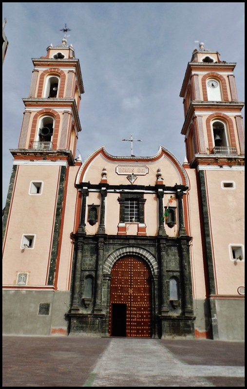

La Parroquia de la Santa Cruz es uno de los principales templos religiosos de Tlacotepec de Benito Juárez, Puebla. Es un lugar de reunión para la comunidad católica, donde se celebran misas, festividades religiosas y actividades que fortalecen las tradiciones y la convivencia entre los habitantes. Además, forma parte del patrimonio cultural e histórico del municipio.